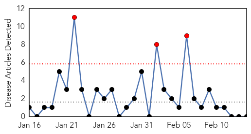
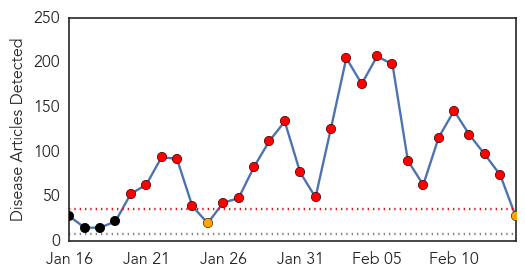
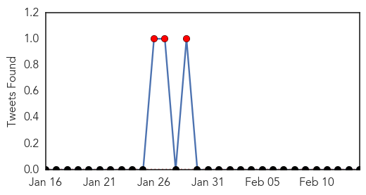
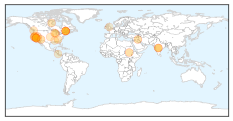
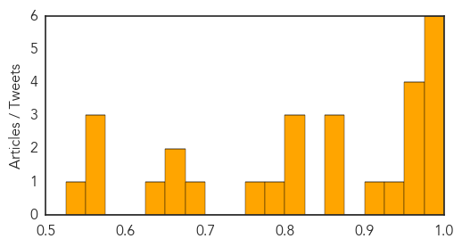

Chikungunya
30-Day Web Trend
3 alerts, 0 warnings

30-Day Twitter Trend
0 alerts, 0 warnings

Article Locations

Article Confidences

Top Articles:
-
No articles found for Feb 14, 2015
Top Tweets:
-
No tweets found for Feb 14, 2015
Measles
30-Day Web Trend
24 alerts, 2 warnings

30-Day Twitter Trend
5 alerts, 0 warnings

Article Locations
Article Confidences
Top Articles:
- 0.989
- 3 more confirmed measles cases in Ontario brings total to 11 people
- 0.988
- Eight confirmed cases of measles in Toronto, public health officials say
- 0.986
- Three more confirmed measles cases in Ontario brings total to 11 people
- 0.983
- N.C. DHHS Encourages MMR Vaccination in the Midst of Multi-State Measles Outbreak
- 0.981
- California Has 3 New Measles Cases, Arizona Says Outbreak Winding Down
- 0.977
- Measles outbreak prompts local readiness plans
- 0.970
- California has three new measles cases, Arizona says outbreak winding down
- 0.969
- Look back at deadly history of measles
- 0.963
- 22 cases of measles reported in Canada
- 0.958
- 22 cases of measles reported in Canada
- 0.925
- California measles outbreak was preventable
- 0.903
- Officials confirm fifth measles case in Clark County
- 0.870
- Two measles cases reported in Portage County
- 0.868
- Caribbean on measles watch • Caribbean Life
- 0.865
- Measles vaccination rates vary widely in Mid-Hudson region’s schools
- 0.812
- “I’d rather be safe than sorry:” Health department holds 2nd free vaccine clinic
- 0.809
- California lawmaker introduces bipartisan resolution in favor of measles vaccine
- 0.804
- Measles outbreak stirs up debate
- 0.794
- Marin Coast / Sonoma Coast Guide
- 0.757
- Olympic Christian School students quarantined following second case of measles in Port Angeles -- Port Angeles Port Townsend Sequim Forks Jefferson County Clallam County Olympic Peninsula Daily NEWS
- 0.690
- Public editor criticizes the Toronto Star's Gardasil story
- 0.671
- Measles fear grows in Silicon Valley
- 0.658
- Mississippi a star in vaccine efficacy
- 0.633
- Costa Rica issues warning about bringing back measles from the US
- 0.555
- Measles outbreak in Unity state triggers mass vaccination campaign
- 0.555
- Measles outbreak in Unity state triggers mass vaccination campaign
- 0.554
- Doctors reveal the 5 fears and myths about vaccines
- 0.539
- Bipartisan resolution in favor of measles vaccine introduced
Top Tweets:
-
No tweets found for Feb 14, 2015